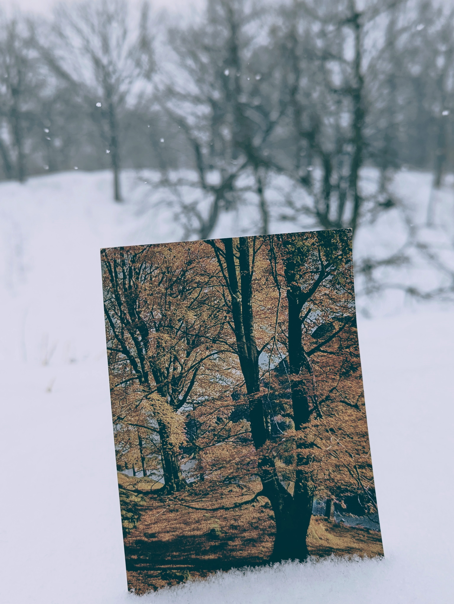

AS02

by our faint shadows going before us is an attempt to sustain a
correspondence with and for nobody. it holds hope that in doing
this it can sustain the conditions under which it may be
corresponded to by nobody. this is to say, it holds hope that
we can know the soul.
‘nominations’ of a soul which has, so to speak, become
momentarily aware of itself are chanced upon, anonymous, and
absolute. they carry the Idea of chance. one such nomination is
‘Dorothy Wordsworth’ and her alfoxden journal, on which the
text in this booklet is based. another, lodged within
wordsworth’s book (itself acquired on a whim), is a blank
postcard of ‘Glencoyne Wood’ by the sea in england, which is
pictured in the booklet alongside the text.
nominations are the opposite of monuments. they affirm the
existence of empty points, blank letters, silences. dorothy
wordsworth’s silence, in which for me she appeared as the
nomination ‘Dorothy Wordsworth’, began at a particular point
in the text. this was then confirmed by a second point,
instantaneous with the awareness that her entries were now,
as they had already been, saturated with silence. she writes:
‘30th. Walked I know not where.
31st. Walked.
1st. Walked by moonlight.’
the Idea shines through us unseen;
our steps—the moon—
‘by our faint shadows going before us.’
*
by our faint shadows going before us is a booklet & music.
the booklet includes photos, text, and the score, as well
as quotations from dorothy wordsworth’s alfoxden journal (1798).
the music is performed by the quartet 'short americans'
(luke martin, noah ophoven-baldwin, max wanderman, adam zahller).
Limited run of 25 booklets with CDs
♫ ON BANDCAMP DOT COM
✎ ON ARCHIVE DOT ORG
↵